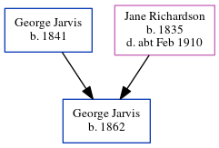

George Jarvis 1862 -
[ Home ] | [ Calendar ] | [ Surnames Index ] | [ Census Index ] | [ Family History ]The child of George Jarvis and Jane Richardson, George Jarvis was born in Surrey, England in 18621. On Apr 2, 1871, he was living at Europa Cottage, Church Road, Battersea, London, England1.
Parents
- George was born in 1841
- Jane was born in 1835
Citations
- 1871 England, Wales & Scotland Census - Findmypast (was age 9 and the son of the head of the household)
Family Tree
Generated by ged2site. Last updated on Jun 11, 2024